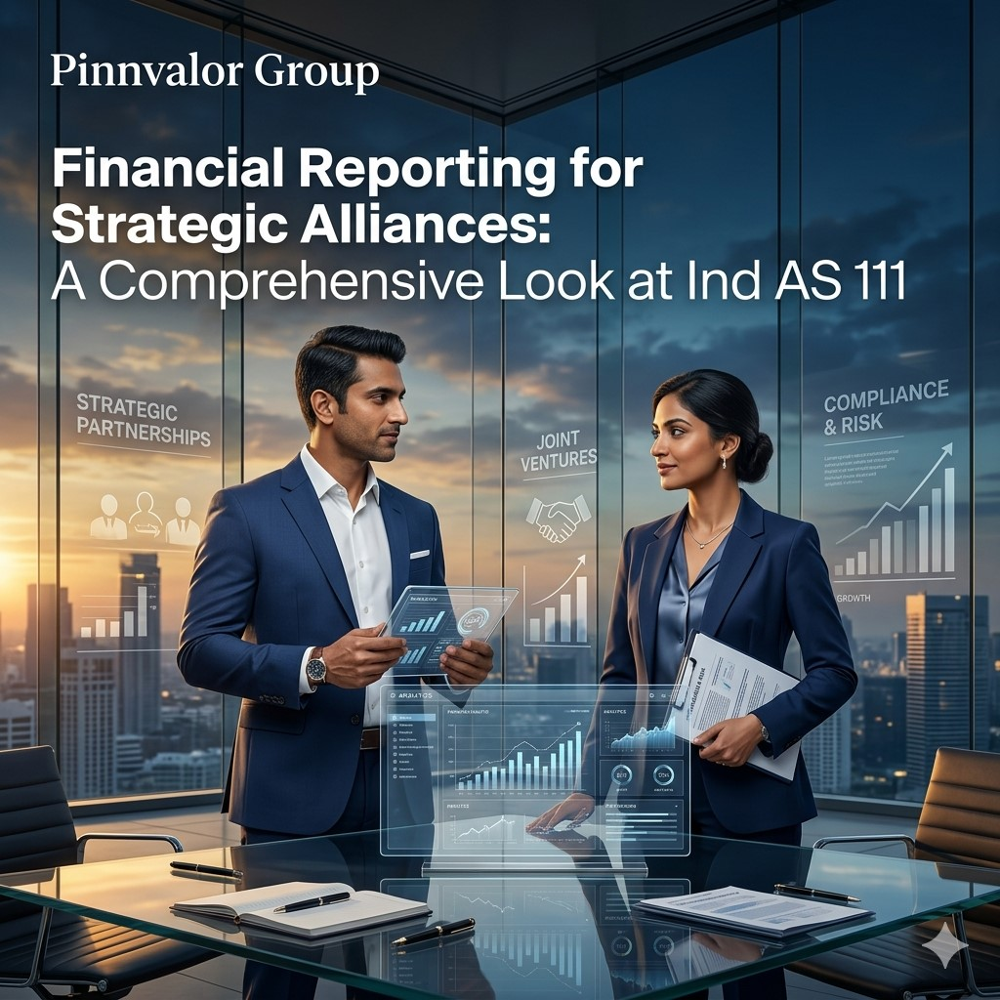

Financial Reporting for Strategic Alliances: A Comprehensive Look at Ind AS 111
In today’s interconnected business environment, organizations increasingly rely on strategic alliances, joint ventures, and collaborative arrangements to expand market reach, share risks, optimize resources, and accelerate innovation. Whether it is infrastructure development, manufacturing partnerships, technology collaborations, or large-scale energy projects, businesses often prefer shared control structures to achieve long-term strategic goals.
Financial Reporting for Strategic Alliances: A Comprehensive Look at Ind AS 111
In joint arrangements, value is created through collaboration—but clarity is created through accounting standards. Ind AS 111 brings transparency by distinguishing between joint operations and joint ventures with precision.
However, these collaborative arrangements also introduce significant accounting and reporting complexities. Determining the nature of control, classifying the arrangement correctly, and recognizing rights and obligations appropriately are critical for ensuring transparent financial reporting.
Ind AS 111 – Joint Arrangements provides the accounting framework for entities involved in arrangements where two or more parties share joint control. The standard establishes principles for identifying, classifying, and accounting for joint arrangements, ensuring that financial statements reflect the economic substance of such collaborations.
This article explores the core principles of Ind AS 111, its classification framework, accounting implications, practical challenges, and strategic significance for businesses and stakeholders.
Understanding the Objective of Ind AS 111
The primary objective of Ind AS 111 is to establish principles for financial reporting by entities that have an interest in arrangements jointly controlled by two or more parties.
The standard focuses on:
- Identifying joint control arrangements
- Classifying joint arrangements appropriately
- Recognizing rights and obligations arising from such arrangements
- Enhancing transparency in collaborative business structures
- Improving comparability of financial statements
Ind AS 111 replaced the earlier proportionate consolidation approach for joint ventures and introduced a more principle-based classification model.
What is a Joint Arrangement?
A joint arrangement is an arrangement where two or more parties have joint control.
Joint control exists only when:
- Relevant activities require unanimous consent of the parties sharing control
- Strategic decisions cannot be made unilaterally
- Contractual agreements define governance and decision-making rights
Joint arrangements are common across industries such as:
- Infrastructure and construction projects
- Oil and gas exploration
- Real estate development
- Technology collaborations
- Manufacturing partnerships
- Renewable energy ventures
- International market expansion projects
Types of Joint Arrangements under Ind AS 111
1. Joint Operations
In a joint operation, parties have rights to the assets and obligations for the liabilities relating to the arrangement.
The parties are called joint operators.
Key Characteristics:
- Direct rights over assets
- Direct responsibility for liabilities
- Parties recognize their share individually
- Often used for project-based collaborations
Accounting Treatment:
A joint operator recognizes:
- Its assets, including share of jointly held assets
- Its liabilities, including share of joint liabilities
- Revenue from sale of its share of output
- Expenses incurred individually and jointly
This approach reflects the direct economic involvement of the parties.
2. Joint Ventures
In a joint venture, parties have rights to the net assets of the arrangement rather than direct rights to specific assets.
The parties are called joint venturers.
Key Characteristics:
- Separate legal entity usually exists
- Parties hold interest in net assets
- Strategic decisions require joint approval
- Common in long-term business collaborations
Accounting Treatment:
Joint ventures are accounted for using the equity method under Ind AS 28.
Under the equity method:
- Investment is initially recognized at cost
- Subsequent adjustments are made for share of profits/losses
- Dividends reduce carrying value
- Investment reflects cumulative performance of the venture
Key Factors in Classifying Joint Arrangements
Determining whether an arrangement is a joint operation or joint venture requires careful evaluation.
1. Structure of the Arrangement
The existence of a separate legal vehicle influences classification but does not solely determine it.
2. Legal Form
The legal framework may indicate whether parties have direct rights to assets or merely rights to net assets.
3. Contractual Terms
Contracts often override legal form and specify:
- Decision-making rights
- Profit-sharing mechanisms
- Obligations toward liabilities
- Operational responsibilities
4. Other Relevant Facts and Circumstances
Economic substance must be analyzed carefully. For example:
- Who purchases output?
- Who bears inventory risk?
- Who funds liabilities?
- Who controls cash flows?

Why Ind AS 111 Matters for Businesses
1. Enhances Financial Transparency
The standard ensures that users of financial statements understand the true nature of collaborative arrangements.
2. Improves Investor Confidence
Investors gain clarity regarding:
- Shared risks
- Profit participation
- Off-balance sheet exposures
- Operational obligations
3. Supports Better Governance
Clearly defined control mechanisms improve accountability among participating entities.
4. Reduces Misclassification Risks
Incorrect classification can materially distort financial statements and business performance indicators.
Practical Challenges in Applying Ind AS 111
1. Assessing Joint Control
Determining whether unanimous consent genuinely exists can be complex, especially in multilayered governance structures.
2. Evaluating Economic Substance
Legal structure alone is insufficient. Businesses must evaluate commercial realities and operational arrangements.
3. Complex Contractual Agreements
Large alliances often contain intricate contractual clauses requiring careful accounting interpretation.
4. Industry-Specific Variations
Industries such as oil & gas, infrastructure, and telecom may involve highly customized arrangements.
5. Transition from Previous Standards
Entities previously using proportionate consolidation faced significant reporting changes under Ind AS 111.
Illustrative Example
Suppose two infrastructure companies jointly develop a toll highway project.
- Both companies jointly decide operational policies
- Each company contributes equipment and funding
- Each party directly bears construction liabilities
- Revenue is shared contractually
In this case, the arrangement may qualify as a joint operation because the parties have direct rights to assets and obligations for liabilities.
Alternatively, if both companies establish a separate incorporated entity that owns the highway assets and the parties merely share profits, the arrangement may qualify as a joint venture.
Disclosure Requirements under Ind AS 111
Transparent disclosures are essential for helping stakeholders evaluate the financial impact of joint arrangements.
Entities typically disclose:
- Nature of joint arrangements
- Judgments used in classification
- Extent of involvement
- Commitments and contingencies
- Summarized financial information
- Risks associated with joint arrangements
Comprehensive disclosures strengthen stakeholder confidence and improve financial statement usability.
Strategic Importance of Joint Arrangements in Modern Business
Strategic alliances are increasingly central to corporate growth strategies.
Businesses use joint arrangements to:
- Enter new markets
- Share technological expertise
- Reduce capital burden
- Mitigate operational risks
- Strengthen competitive positioning
- Accelerate innovation cycles
As collaborative ecosystems expand globally, accurate financial reporting under Ind AS 111 becomes even more critical.
The Role of Finance Professionals and Auditors
Finance teams, auditors, and valuation professionals play a crucial role in ensuring compliance with Ind AS 111.
Key responsibilities include:
- Reviewing contractual arrangements
- Assessing governance structures
- Determining appropriate classification
- Evaluating disclosure adequacy
- Ensuring consistency with Ind AS 28 and other standards
- Monitoring changes in control structures
Strong professional judgment is essential because joint arrangement structures are often highly customized.
Conclusion
In an era where collaboration drives business expansion and innovation, joint arrangements have become a strategic necessity across industries. However, with shared opportunities come shared accounting responsibilities.
Ind AS 111 provides a robust framework for capturing the economic reality of strategic alliances by emphasizing rights, obligations, and joint control rather than merely legal structures.
Whether businesses operate through joint operations or joint ventures, accurate classification and transparent reporting are essential for maintaining investor confidence, regulatory compliance, and sound corporate governance.
As organizations increasingly pursue collaborative growth models, mastering the principles of Ind AS 111 is no longer just an accounting requirement — it is a strategic imperative for achieving financial clarity, operational accountability, and sustainable business success.